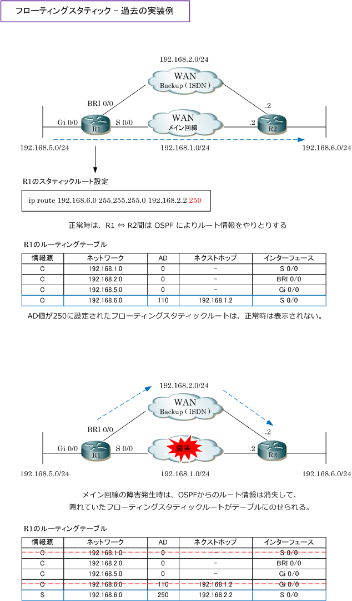
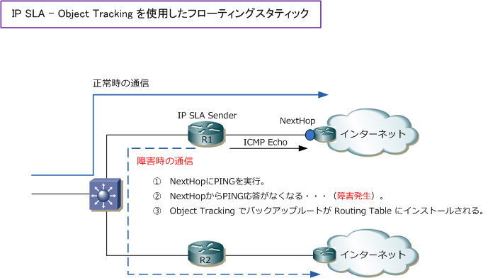

Floating Static Route
フローティングスタティックルートとは
フローティングスタティックルートとは、ダイナミックルーティングプロトコルによりルート情報が受信 できなくなった場合に、AD値を調整したスタティックルートでトラフィックを救済する手法のことです。
デフォルトでは、スタティックルートのAD値は 1 であることから、ダイナミックルーティングプロトコル で学習したルート情報よりもスタティックルートは優先されます。そこで、スタティックルートのAD値を ダイナミックルーティングプロトコルのAD値より大きな値に設定することで、そのスタティックルートは ダイナミックルーティングプロトコルでルート情報を受信できなくなった場合にトラフィックを救済します。
つまり、フローティングスタティックルートとは、ルーティングテーブル上のダイナミックルート情報が 障害などで消失した場合などに、ルーティングテーブル上にインストールされるスタティックルートです。
フローティングスタティックルート：従来のよくある利用例
フローティングスタティックルートは、従来のWAN構成ではレガシーなISDNをバックアップ回線として 使用していたネットワークでよく利用されていました。

レガシーなISDN回線を知らない方は、上図の構成なら主回線と副回線ともにダイナミックルーティング プロトコルを動作させればいいのではないかと考えるかもしれません。
しかしISDNは従量課金のサービスであることから、普段は使用しないのに通信トラフィックを流すのは コスト面から非常に問題であることが分かると思います。そのため、上図のような過去のWAN構成では フローティングスタティックとダイヤルオンデマンドルーティングがセットでよく実装されていました。
フローティングスタティックルート：現在のよくある利用例
フローティングスタティックルートが、AD値の高いスタティックルートを設定することにより実現できる バックアップ手法という点から、IP SLAの機能と併用してAD値を設定するスタティックルートについても フローティングスタティックルートと言えます。
記事の冒頭で、フローティングスタティックルートはダイナミックルーティングプロトコルでルート情報が 受信できなくなった場合に、AD値を調整したスタティックルートでトラフィックを救済する手法であると 解説しましたが、ダイナミックルートだけでなくスタティックルートのルート情報がルーティングテーブル から消失した場合にも、フローティングスタティックルートを使用することができます。

IP SLAを実装したフローティングスタティックルートとは、具体的にはIP SLA - Object Trackingによる ルート情報のバックアップの実装のことです。
なお、IP SLA以外の手法でも、フローティングスタティックは実装することができます。要するにAD値を 調整したスタティックルートを潜伏させてバックアップ経路を生成させておきたい時に実装する手法です。 ※ 注意点として、企業LANネットワークで実装する場合は必ず双方向通信を意識して実装させましょう。